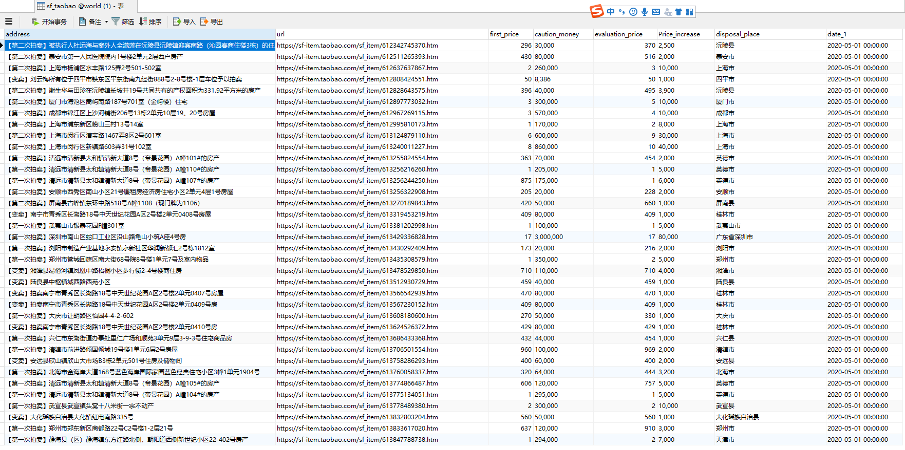

司法拍卖数据可视化，主要涉及的知识点：Django 、 Python 、 HTML 、JS 、 Mysql
Spyder 阿里司法拍卖 这部分的代码略去不提，有需要的伙伴可以给我发邮件。afrunk7@gmail.com
如何使用 Git 辅助开发 A 本地同步文件到 Git 首先，我在 Github 上创建了一个仓库,获取一个 Git 的仓库路径，然后在本地的开发环境使用 Git Bash 执行如下指令，同步我们的代码和文件到 Github 上。
1 2 3 4 5 6 7 8 9 git init git add . git remote add origin '上面创建的仓库路径' git commit -m 'Test' git push -u origin master -f git push origin master
这样子，我们就将在本地开发的项目都同步到 Github 仓库了，只需要在服务器上的 Pycharm 使用 Clone 该仓库，就可以直接运行项目了。避免在服务器上开发的效率低下问题，实现了 本地开发环境——远程开发环境的内容同步。
下面，我们执行如下的代码，将刚刚更新的内容同步到 Github。
1 2 3 4 5 6 7 8 9 10 11 12 13 14 15 afrunk@DESKTOP-AQI8TCS MINGW64 /g/Github/SF_Taobao (master) $ git add . warning: LF will be replaced by CRLF in .idea/workspace.xml. The file will have its original line endings in your working directory. afrunk@DESKTOP-AQI8TCS MINGW64 /g/Github/SF_Taobao (master) $ git commit -m 'Remade' [master ab535ce] Remade 4 files changed, 100 insertions(+), 18 deletions(-) create mode 100644 Images/1. png afrunk@DESKTOP-AQI8TCS MINGW64 /g/Github/SF_Taobao (master) $ git push origin master
B 服务器 Clone 项目 首先，我们需要配置 Git 开发环境。然后将我们在本地上传的代码，Clone 下来即可。
在 Pycharm 的 File-Settings - Version Control-Git ，将 Path to Git executable 中填入刚刚我们安装好的 Git.exe 的路径，选择确认。
在配置好 Clone 的路径之后，点击更新内容即可拉下来所有的文件。
Git CLone Project 我们也可以直接安装一个 git，然后直接使用 git clone git链接，就可以下载下来一个项目，该文件会存储在用户的文件夹下
配置服务器的开发环境 A Mysql 的环境配置 参考该文章即可：确实是比较详细的 Mysql 部署和使用的入门级文档
B 如何配置服务器的环境变量 我装好 Mysql 之后发现不能使用，于是寻找 计算机的环境变量配置，和本地的开发环境不同。后面参考了 该文章 之后，发现可以使用 Windows + R，输入 sysdm.cpl 进入系统属性的配置窗口。将我们安装的 Mysql 的 BIn 目录添加到 Path 即可。
然后我们进入到 Windows 管理工具-服务 可以查看到 Mysql80 正在工作。
Navicat 链接数据库 为了提高开发效率，不再重复建表，我们可以使用 Navicat 导入表，将我们之前在本地抓取的数据都存入到数据库中。
使用 Navicat 的时候提示 1251 报错，解决方案：参考解决方法
1 2 3 4 5 mysql> alter user 'root'@'localhost' identified with mysql_native_password by '123456'; Query OK, 0 rows affected (0.22 sec) mysql> flush privileges; Query OK, 0 rows affected (0.03 sec)
然后我们在 Navicate 中链接数据库的用户密码就会被修改为 root and 123456 。
将我们下载下来的项目中的数据库表导入到数据库中。
结果如下
每日自动运行 修改下数据库的配置，将各种库都配置好之后。设定 while 循环，每次运行后休眠1天时间即可。
Data Analysis 前面主要是配置服务器的环境和如何使用 Git 来同步项目代码。接下来的部分就是如何将我们获取到的数据进行可视化。首先，我们需要查看下数据格式和内容

1 2 3 4 5 6 7 8 address 地址 需要进行提取 url 拍卖品的链接 first_price 起拍价 单位为k caution_monry 保证金 单位为元 evaluation_price 评估价 单位为k price_increase 加价幅度 单位为元 disposal_place 处置单位 date_1 时间
Django Map 为了可以展示数据，我们需要构建一个Web页面。这里使用的是 Django 作为后端框架，我们首先创建一个 Django 项目，修改其数据库的配置和基本语言配置，以及新建一个应用
1 2 3 4 5 6 7 8 9 10 11 12 13 14 15 16 17 18 19 20 21 DATABASES = { 'default' : { 'ENGINE' : 'django.db.backends.mysql' , 'NAME' : "" , 'USER' :"" , 'PASSWORD' :"" , 'HOST' :"127.0.0.1" } } LANGUAGE_CODE = 'zh-hans' TIME_ZONE = 'Asia/Shanghai' python manage.py startapp map
如何才能将数据库的数据展示在地图上呢？这里使用的是百度的开源 API，调用百度地图实现标点效果。首先需要注册 一个账户，申请百度地图浏览器端应用 ，获取到密匙。
拿到密匙之后，我们需要构建 View 视图来请求数据库的经纬度并将请求到的数据传递到 HTML 页面上进行渲染，然后通过路由来请求视图函数，然后通过百度地图的API 就可以在地图上标记内容了。
因为，我们之前的爬虫并没有补充经纬度，所以现在先构建一个 Demo 来实现对某个地点的标点效果。
在创建的 APP 下的 models.py 中添加如下语句1 2 3 4 5 6 map/models.py class address_info(models.Model): longitude = models.FloatField() # 经度 latitude = models.FloatField() #维度 data = models.CharField(max_length=200) # 标记被点击所触发的内容
执行同步数据库的操作
1 2 python manage.py makemigrations python manage.py migrate
查看数据库，并在数据库中插入测试数据
添加 View 视图函数来请求数据库的经纬度数据，并将其封装成 Json 格式传递给我们指定的 HTML 页面，然后将该视图函数和 URL 绑定，方便我们请求该路由时即触发该函数。
1 2 3 4 5 6 7 8 9 10 11 12 13 14 15 16 17 18 19 20 21 22 23 24 25 26 27 map/views.py from django.shortcuts import renderfrom django.shortcuts import renderimport jsonfrom map.models import address_infodef test (request) : address_point = address_info.objects.all() address_longitude = [] address_latitude = [] address_data = [] for i in range(len(address_point)): address_longitude.append(address_point[i].longitude) address_latitude.append(address_point[i].latitude) address_data.append(address_point[i].data) print(address_longitude,address_latitude) return render(request, 'address.html' , {'address_longitude' : json.dumps(address_longitude), 'address_latitude' : json.dumps(address_latitude), 'address_data' : json.dumps(address_data)})
修改路由
1 2 3 4 5 6 7 8 9 SF_Web/urls.py from django.contrib import adminfrom django.urls import pathfrom map import viewsurlpatterns = [ path('admin/' , admin.site.urls), path('address/' , views.test) ]
添加绑定视图函数的 HTML 页面，其中包含有如何调用 View 视图函数传递过去的数据，以及如何使用百度的地图 API。核心部分在 Script ，里面包含了如何调用穿过来的数据进行标点。
1 2 3 4 5 6 7 8 9 10 11 12 13 14 15 16 17 18 19 20 21 22 23 24 25 26 27 28 29 30 31 32 33 34 35 36 37 38 39 40 41 42 43 44 45 46 47 48 49 50 51 52 53 54 55 56 57 58 59 60 61 62 63 64 65 66 67 68 69 70 71 72 73 74 75 76 77 78 79 templates/address.html <html> <head> <meta http-equiv="Content-Type" content="text/html; charset=utf-8"/> <meta name="viewport" content="initial-scale=1.0, user-scalable=no"/> <style type="text/css"> body, html { width: 100%; height: 100%; margin: 0; font-family: "微软雅黑"; } #allmap { height: 700px; width: 100%; } #r-result { width: 100%; font-size: 14px; } </style> <script type="text/javascript" src="http://api.map.baidu.com/api?v=2.0&ak=s3x99zDaiDVq0tMMuQoMaspWidTkDTl3"></script> <title>经纬度定位</title> </head> <body> <div id="allmap"></div> <div id="r-result"> <input type="button" value="获取我的位置" onclick="get_location()"/> //点击按钮 点击之后会出现所有的标点 </div> </body> </html> <script type="text/javascript"> // 百度地图API功能 var map = new BMap.Map("allmap"); // 这个是默认的我的地址 可以自行设置 map.centerAndZoom(new BMap.Point(113.264385,23.129112), 18); map.enableScrollWheelZoom(true); var navigationControl = new BMap.NavigationControl({ // 靠左上角位置 anchor: BMAP_ANCHOR_TOP_LEFT, // LARGE类型 type: BMAP_NAVIGATION_CONTROL_LARGE, // 启用显示定位 enableGeolocation: true }); map.addControl(navigationControl); function get_location() { var address_latitude ={{ address_latitude |safe}}; var address_longitude ={{ address_longitude|safe }}; var address_data ={{ address_data |safe}}; var point = []; //存放标注点经纬信息的数组 var marker = []; //存放标注点对象的数组 for (var i = 0; i < address_longitude.length; i++) { point[i] = new BMap.Point(address_longitude[i], address_latitude[i]); //循环生成新的地图点 marker[i] = new BMap.Marker(point[i]); //按照地图点坐标生成标记 map.addOverlay(marker[i]); } for (i = 0; i < marker.length; i++) { (function () { var index = i; marker[index].addEventListener('click', function () { this.openInfoWindow(new BMap.InfoWindow(address_data[index])); }); })(); } } </script>
效果如下
我们的测试数据的经纬度是怎么来的呢？我们可以打开百度 或 高德地图开放平台 ，选择 开发支持——坐标拾取器，然后在这里输入地址即可
但是并不是所有的地址都可以获取到经纬度
因为我们的爬虫获取到的数据并没有经纬度，所以我们接下来就需要如何将地址转换成经纬度，追加到我们之前的爬虫表中去。
Add Latitude and longitude 使用下面的脚本就是可以为我们的爬虫的数据表添加经纬度的数据
1 2 3 4 5 6 7 8 9 10 11 12 13 14 15 16 17 18 19 20 21 22 23 24 25 26 27 28 29 30 31 32 33 34 35 36 37 38 39 40 41 42 43 44 45 46 47 48 49 50 51 52 53 54 55 56 57 58 59 60 61 62 63 64 65 66 67 68 69 70 71 72 73 74 75 76 77 78 79 80 81 82 83 address_LL.py ''' 将爬虫抓到的所有地址的经纬度通过高德地图的API转换出来 ''' import requestsimport jsonimport pymysqldb = pymysql.connect(host='127.0.0.1' , port=3306 , user='root' , password='password' , db='sf' , charset='utf8' ) cursor = db.cursor() sql ='select * from sf_taobao' cursor.execute(sql) content = cursor.fetchall() for i in content: print(i[0 ]) keyword = i[0 ] url = 'https://restapi.amap.com/v3/place/text?s=rsv3&children=&key=8325164e247e15eea68b59e89200988b&page=1&offset=10&city=430500&language=zh_cn&callback=jsonp_751534_&platform=JS&logversion=2.0&sdkversion=1.3&appname=https%3A%2F%2Flbs.amap.com%2Fconsole%2Fshow%2Fpicker&csid=4A507AE3-28EE-47D5-9EB9-FB7CCA482B49&keywords={}' .format(keyword) headers={ "Accept" : "*/*" , "Accept-Encoding" : "gzip, deflate, br" , "Accept-Language" : "zh-HK,zh;q=0.9,zh-CN;q=0.8,en;q=0.7,en-US;q=0.6,zh-TW;q=0.5" , "Connection" : "keep-alive" , "Cookie" : "UM_distinctid=171dabe788a2af-0658bec6864d5d-5313f6f-1fa400-171dabe788b724; cna=EjzNFcjlwBgCAW41PyFszgpg; isg=BHJyrIOUeD9afEc1BovWZLdew7hUA3adVoYmqTxK6CUQzxDJJJbRrMZmu2Pzv-41; l=eBSt4d_eqKMUUqYYBO5Zlurza77tXIObzsPzaNbMiIHca6OO6hL7UNQcuqCyJdtj_t5jTetPijrhsdE9rRUU-nkDBeYIVi3iOe96-e1.." , "Host" : "restapi.amap.com" , "Referer" : "https//lbs.amap.com/console/show/picker" , "Sec-Fetch-Dest" : "script" , "Sec-Fetch-Mode" : "no-cors" , "Sec-Fetch-Site" : "same-site" , "User-Agent" : "Mozilla/5.0 (Windows NT 10.0; Win64; x64) AppleWebKit/537.36 (KHTML, like Gecko) Chrome/80.0.3987.163 Safari/537.36" , } con = requests.get(url,headers=headers).text.replace('jsonp_751534_(' ,'' )[:-1 ] print(con) con_dict = json.loads(con) print(con_dict) try : data = con_dict['pois' ][0 ]['location' ] final_data = str(data).split(',' ) print(final_data[0 ]) print(final_data[1 ]) cursor.execute("UPDATE sf_taobao set longitude=%s where url=%s" %(final_data[0 ],db.escape(i[1 ]))) db.commit() cursor.execute("UPDATE sf_taobao set latitude=%s where url=%s" %(final_data[1 ],db.escape(i[1 ]))) db.commit() except : pass
转换后的经纬度如图，可以很清晰的看到并不是所有的数据都可以进行经纬度的转换的。熟悉 Django 开发的朋友就明白，我们下一步，就是把这个有经纬度的数据，写入到我们之前构建的 Model 表中去。
1 2 3 4 5 6 7 8 9 10 11 12 13 14 15 16 17 18 19 20 21 22 23 24 25 26 27 28 29 30 31 address_LL_map.py """ 将转换出来的爬虫表中的经纬度和地址名称查询出来，去掉空值写入到 django 的 map_address_info 表中 """ import pymysqldb = pymysql.connect(host='127.0.0.1' , port=3306 , user='root' , password='password' , db='sf' , charset='utf8' ) cursor = db.cursor() sql ='select * from sf_taobao' cursor.execute(sql) content = cursor.fetchall() for i in content: if i[9 ]=='0' : print(i) else : sql = "INSERT INTO map_address_info(longitude,latitude, data)VALUES('%s', '%s', %s)" %(i[8 ],i[9 ],db.escape(i[0 ])) cursor.execute(sql) db.commit()
然后我们再来运行 Django 项目，看看效果
因为筛选后的全国数据比较大，最少有4k多，所以我这边做了一个切片，只在地图上标记500条数据。
Deploy 我们现在做出来一个雏形了，目的肯定是为了部署到服务器上，让大家都可以看到的。所以接下来就是如何使用 Windows 服务器来部署我们的项目。
因为之前学过的服务器部署网站使用的就是 IIS，但是出现了各种问题。现在考虑使用 Apache + mod_wsgi 来部署。
先按照这个文章 django在windows下的部署（Apache+mod_wsgi） ，部署 Apache，但是端口报错，造成该问题的原因是因为我直接添加了端口内容，而没有删除下面默认的配置。
该文章解决了这个问题 ：解决apache开始时出现的“ (OS 10048)通常每个套接字地址(协议/网络地址/端口)只允许使用一次” 这个错误 ,然后在服务器的本地服务器启动 Apache 的服务，输入我们在 配置文件中输入的端口好 5001，就可以访问到 Apache的 网站内容了。
下面是我们配置 Django 和 Apache 的关联时会用到的一些配置内容。
LoadFile “c:/users/administrator/anaconda3/python37.dll”
跟着上面的步骤修改好了之后，重启服务器，就可以发现我们可以在本地的5001端口查看到网站了。但是我们希望的是可以在局域网通过ip地址访问到网站，所以我们将 apache 的 listen 设置为服务器的 私网 ip ，然后 Django 就会报错了，需要我们修改 Settings.py 中的 ip 配置。 ALLOWED_HOSTS = [] 修改为 ALLOWED_HOSTS = ['*'] 即可，然后我们在服务器设置中重启 apache 服务，然后访问：DJango 项目-sf Data Analysis 在服务器的局域网内是可以访问到的，想当于本地地址。但是外网肯定访问不到，因为这个是私网 IP，相当于是局域网，将前面的私网 IP 更换成公网 IP DJango 项目-sf Data Analysis 即可访问我们部署好的 Django 项目了。
这就意味着，我们后续部署不同的 Django 项目，只需要使用 Git clone 项目文件，配置好运行环境和数据库文件之后，在 Apache 的配置文件中修改关联的 Project.Settings 即可实现项目的部署。
Reference